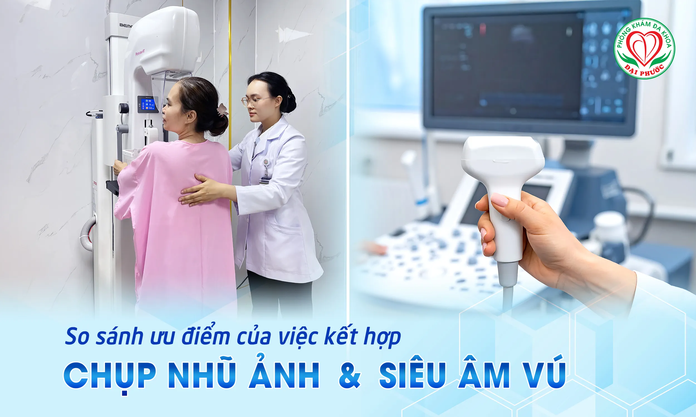
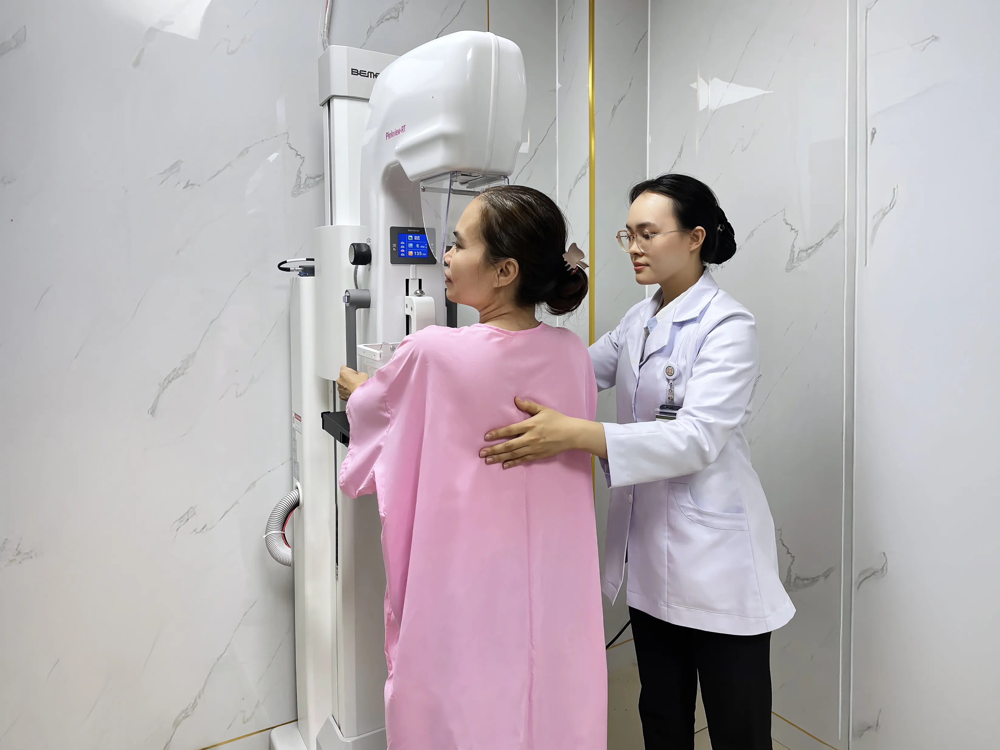
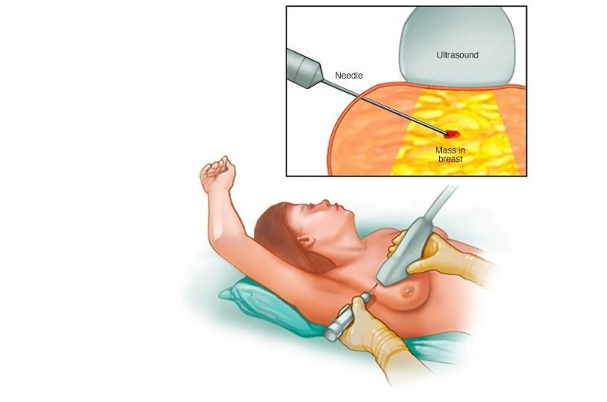

Tại sao cần kết hợp kết quả chụp nhũ ảnh và siêu âm vú trong chẩn đoán điều trị?
Trong lĩnh vực chẩn đoán hình ảnh tuyến vú, việc kết hợp chụp nhũ ảnh (mammography) và siêu âm vú đã trở thành tiêu chuẩn vàng giúp nâng cao độ chính xác chẩn đoán đáng kể. Phòng khám Đa khoa Đại Phước với đội ngũ bác sĩ chẩn đoán hình ảnh giàu kinh nghiệm sẽ giải đáp tại sao hai phương pháp này cần được thực hiện song song.
Nhũ ảnh và siêu âm vú: Hai phương pháp bổ trợ hoàn hảo
Chụp nhũ ảnh - "Mắt thần" phát hiện vi vôi hóa

Chụp nhũ ảnh sử dụng tia X năng lượng thấp để tạo hình ảnh chi tiết các cấu trúc bên trong tuyến vú. Đây được coi là phương pháp tầm soát ung thư vú tiêu chuẩn cho phụ nữ từ 40 tuổi trở lên.
Ưu điểm vượt trội của nhũ ảnh:
- Phát hiện vi vôi hóa - dấu hiệu sớm nhất của ung thư vú ống tuyến
- Quan sát toàn cảnh tuyến vú từ nhiều góc độ
- Phát hiện các tổn thương sâu trong mô vú
- Hiệu quả cao với mô vú thoái hóa mỡ
Xem thêm: Chụp nhũ ảnh tầm soát và phát hiện sớm ung thư vú
Siêu âm vú - Công nghệ "nhìn thấu" mô vú dày

Siêu âm vú sử dụng sóng âm tần số cao để tái tạo hình ảnh thời gian thực của tuyến vú, đặc biệt hiệu quả với phụ nữ châu Á có mô vú dày đặc.
Điểm mạnh của siêu âm vú:
- Phân biệt rõ u nang lỏng và u đặc
- Không sử dụng tia phóng xạ, an toàn tuyệt đối
- Hiệu quả cao với mô vú dày (phổ biến ở phụ nữ Việt Nam)
- Hỗ trợ sinh thiết kim nhỏ chính xác
Tại sao cần kết hợp cả hai phương pháp?
1. Bù trừ nhược điểm của nhau
Nhũ ảnh có hạn chế:
- Độ nhạy thấp với mô vú dày
- Khó phát hiện tổn thương ở phụ nữ dưới 40 tuổi
- Có thể bỏ sót khối u không có vi vôi hóa
Siêu âm vú có giới hạn:
- Không phát hiện được vi vôi hóa
- Phụ thuộc nhiều vào kỹ năng người thực hiện
- Khó quan sát toàn bộ tuyến vú một cách hệ thống
2. Nâng cao độ chính xác chẩn đoán
Khi kết hợp, độ chính xác tăng đáng kể từ:
- Nhũ ảnh đơn thuần: có hạn chế
- Siêu âm đơn thuần: có hạn chế
- Kết hợp cả hai: độ chính xác cao
3. Giảm thiểu kết quả âm tính giả và dương tính giả
Đội ngũ bác sĩ chuyên khoa chẩn đoán hình ảnh tại Phòng khám Đa khoa Đại Phước với nhiều năm kinh nghiệm về nhũ ảnh và siêu âm vú chia sẻ:
"Việc kết hợp hai phương pháp giúp chúng tôi phát hiện được những tổn thương nhỏ nhất, đồng thời giảm thiểu việc chẩn đoán nhầm. Đặc biệt quan trọng đối với phụ nữ Việt Nam có mô vú dày."
Quy trình kết hợp tối ưu tại Phòng khám Đa khoa Đại Phước
Bước 1: Thăm khám lâm sàng
- Bác sĩ sản phụ khoa khám tuyến vú bằng tay
- Đánh giá các yếu tố nguy cơ cá nhân
- Tư vấn phương pháp phù hợp
Bước 2: Thực hiện nhũ ảnh
- Chụp tư thế chuẩn cho mỗi bên vú
- Sử dụng máy chụp kỹ thuật số hiện đại
- Đọc kết quả theo tiêu chuẩn BI-RADS
Bước 3: Siêu âm vú bổ sung
- Siêu âm toàn bộ tuyến vú và hạch nách
- Đánh giá chi tiết các vùng nghi ngờ trên nhũ ảnh
- Siêu âm Doppler màu khi cần thiết
Bước 4: Kết luận tổng hợp
- Phân tích kết hợp cả hai phương pháp
- Phân loại nguy cơ theo BI-RADS
- Tư vấn theo dõi hoặc can thiệp sớm
Những trường hợp đặc biệt cần kết hợp
1. Phụ nữ có nguy cơ cao
- Tiền sử gia đình mắc ung thư vú/buồng trứng
- Mang gen đột biến BRCA1/BRCA2
- Từng điều trị ung thư vú
2. Phụ nữ có mô vú dày đặc
- Phổ biến ở phụ nữ châu Á
- Tăng nguy cơ ung thư vú
- Nhũ ảnh đơn thuần có thể bỏ sót tổn thương
3. Phụ nữ có triệu chứng lâm sàng
- Sờ thấy khối u trong vú
- Tiết dịch núm vú bất thường
- Thay đổi hình dạng, màu sắc da vú
Lợi ích của việc kết hợp tại Phòng khám Đa khoa Đại Phước
1. Chẩn đoán chính xác, toàn diện
- Hệ thống máy móc hiện đại nhập khẩu
- Bác sĩ chuyên khoa giàu kinh nghiệm
- Quy trình chuẩn quốc tế
2. Tiết kiệm thời gian và chi phí
- Thực hiện cả hai phương pháp trong một lần khám
- Không cần đi nhiều nơi khác nhau
- Kết quả nhanh chóng, chính xác
3. Tư vấn và theo dõi liên tục
- Lập kế hoạch tầm soát cá nhân hóa
- Tư vấn FNA vú khi phát hiện bất thường
- Theo dõi định kỳ khoa học
4. An tâm tuyệt đối
- Độ chính xác cao nhất hiện nay
- Phát hiện sớm nguy cơ ung thư vú
- Điều trị kịp thời nếu cần thiết
Ai nên thực hiện kết hợp nhũ ảnh và siêu âm vú?
Nhóm nên thực hiện thường xuyên
- Phụ nữ từ 40 tuổi trở lên: Định kỳ theo khuyến cáo
- Có tiền sử gia đình: Thường xuyên hơn từ 35 tuổi
- Mang gen nguy cơ cao: Theo dõi sát sao
- Có triệu chứng bất thường: Ngay lập tức
Nhóm nên tham khảo ý kiến bác sĩ
- Phụ nữ dưới 40 tuổi có yếu tố nguy cơ
- Đang sử dụng hormone dài ngày
- Có bệnh lý tuyến vú lành tính
Xem thêm: 5 dấu hiệu cảnh báo cần khám phụ khoa ngay
So sánh hiệu quả các phương pháp
|
Phương pháp |
Ưu điểm chính |
Hạn chế |
Đối tượng phù hợp |
|
Nhũ ảnh đơn thuần |
Phát hiện vi vôi hóa |
Hạn chế với mô dày |
Mô vú thoái hóa mỡ |
|
Siêu âm đơn thuần |
An toàn, không phóng xạ |
Không thấy vi vôi hóa |
Mô vú dày, phụ nữ trẻ |
|
Kết hợp cả hai |
Độ chính xác cao nhất |
Chi phí cao hơn |
Tất cả phụ nữ |
Tầm quan trọng của việc phát hiện sớm
Ung thư vú khi được phát hiện ở giai đoạn sớm có tiên lượng điều trị rất tích cực. Việc kết hợp nhũ ảnh và siêu âm vú giúp:
- Phát hiện các tổn thương ở kích thước nhỏ nhất
- Xác định chính xác vị trí và tính chất tổn thương
- Hướng dẫn sinh thiết chính xác nếu cần
- Theo dõi hiệu quả điều trị
Xem thêm: Tầm soát ung thư tuyến vú
Công nghệ và trang thiết bị hiện đại
Máy chụp nhũ ảnh kỹ thuật số
- Độ phân giải cao
- Liều bức xạ thấp
- Hình ảnh rõ nét, chi tiết
Hệ thống siêu âm chuyên dụng
- Đầu dò tần số cao
- Chế độ Doppler màu
- Hình ảnh thời gian thực
Quy trình an toàn và chất lượng
Tại Phòng khám Đa khoa Đại Phước, chúng tôi cam kết:
- Tuân thủ nghiêm ngặt các quy định về an toàn phóng xạ
- Sử dụng thiết bị được kiểm định định kỳ
- Nhân viên được đào tạo chuyên nghiệp
- Quy trình kiểm soát chất lượng nghiêm ngặt
Tư vấn sau chẩn đoán
Sau khi có kết quả kết hợp, đội ngũ bác sĩ sẽ:
- Giải thích chi tiết kết quả cho bệnh nhân
- Tư vấn các bước tiếp theo nếu cần
- Lập kế hoạch theo dõi cá nhân
- Hỗ trợ tâm lý cho bệnh nhân và gia đình
Xem thêm: Siêu âm tuyến vú giúp phát hiện sớm ung thư vú
Kết luận
Việc kết hợp chụp nhũ ảnh và siêu âm vú không chỉ là xu hướng hiện đại mà đã trở thành tiêu chuẩn vàng trong chẩn đoán bệnh lý tuyến vú. Tại Phòng khám Đa khoa Đại Phước, chúng tôi cam kết cung cấp dịch vụ tầm soát ung thư vú toàn diện với phương châm "Điều trị bằng trái tim - Chăm sóc bằng tấm lòng".
Đặt lịch khám ngay hôm nay để được tư vấn và thực hiện tầm soát ung thư vú một cách khoa học, chính xác nhất. Sức khỏe của bạn là ưu tiên hàng đầu của chúng tôi.
Lưu ý: Thông tin trong bài viết chỉ mang tính chất tham khảo. Để được chẩn đoán và điều trị chính xác, vui lòng liên hệ Phòng khám Đa khoa Đại Phước để được tư vấn cụ thể từ các bác sĩ chuyên khoa.

Các tin khác


ĐĂNG KÝ NHẬN BẢN TIN

Phòng Khám Đa Khoa Đại Phước
- 829 đường 3 tháng 2, Phường Minh Phụng, Thành phố Hồ Chí Minh
- 1900 599 941 - 0938 829 831
- (028) 3955 7999
- info@ytedaiphuoc.vn
-

6:00 - 11:30 (Chủ Nhật)


GPKD số : 0312023683 cấp ngày: 29/10/2012 Bởi Sở Kế Hoạch và Đầu Tư TP.Hồ Chí Minh
Đại diện: Tống Nguyễn Diễm Hồng